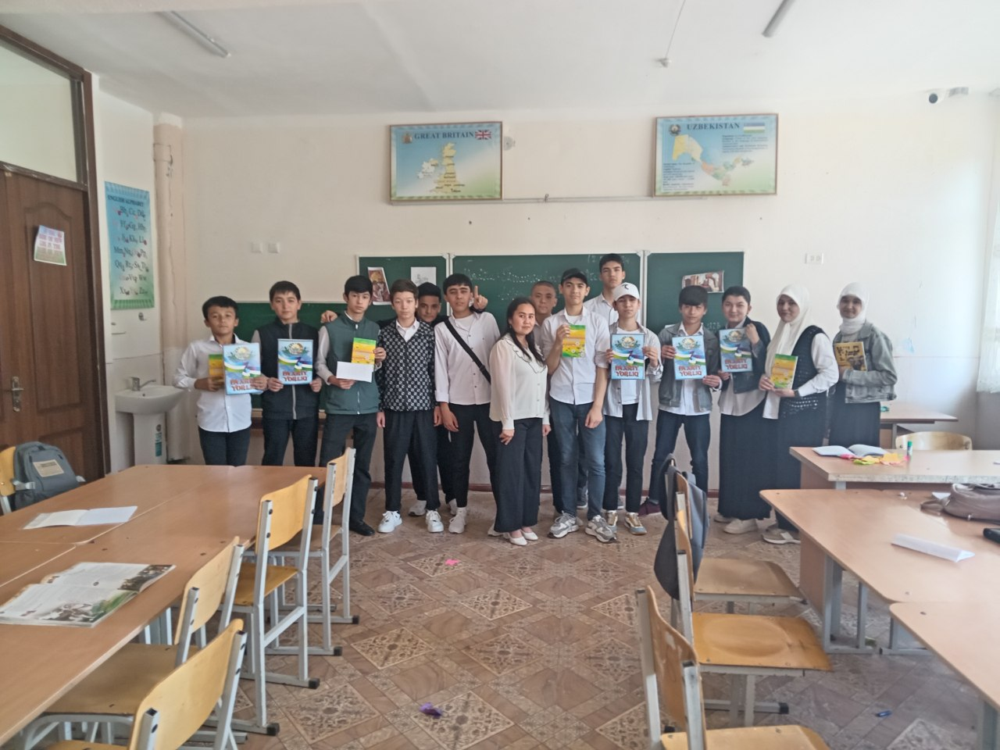
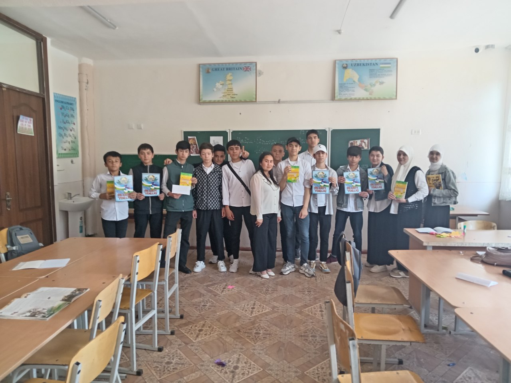

Maktabimiz o'quvchilarga sifatli ta'lim va keng imkoniyatlar taqdim etadi. Biz har bir o'quvchining qobiliyatlarini rivojlantirishga intilamiz.
Maktabimizda zamonaviy jihozlar, tajribali o'qituvchilar va qulay o'quv muhiti mavjud. Bizning maqsadimiz - kelajak avlodni bilimli va mas'uliyatli etib tarbiyalashdir.
Batafsil O'qish.webp) 
